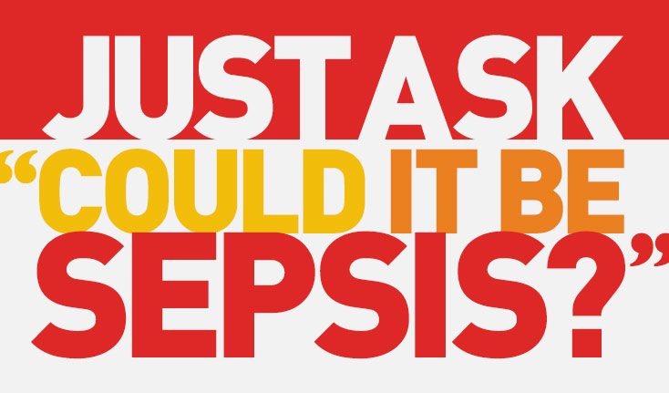

SEPSIS AWARENESS
Home
Welcome to the Sepsis Awareness website. This website is designed to help you learn more about sepsis and how to prevent it.
What is sepsis?
Sepsis is the body's overwhelming and life-threatening response to infection that can lead to tissue damage, organ failure, and death.
Medically, sepsis is your body's immune system overresponding to an infection.
What should I do if I find out I have sepsis?
Seek medical help urgently. It is treatable as long as it is identified early enough - which is exactly why you should take our quiz if you suspect you have it!
